The 10,000 Instruments Workshop - (Im)practical Research for Critical Speculation
Abstract
This paper describes the 10,000 Instruments workshop, a collaborative online event conceived to generate interface ideas and speculate on music technology through open-ended artefacts and playful design explorations. We first present the activity, setting its research and artistic scope. We then report on a selection of outcomes created by workshop attendees, and examine the critical design statements they convey. The paper concludes with reflections on the make-believe, whimsical and troublemaking approach to instrument design adopted in the workshop. In particular, we consider the ways this activity can support individuals' creativity, unlock shared musical visions and reveal unconventional perspectives on music technology development.
Author Keywords
Critical NIME practices, speculative design, absurd making
CCS Concepts
Human-centered computing ~ Interaction design ~ Interaction design process and methods ~ Participatory design
Applied computing ~ Arts and humanities ~ Performing arts
Introduction
Music technologists embrace a variety of approaches and mindsets: alongside specialised technical investigations, researchers cultivate holistic and critical attitudes. Examples of such work include investigations on gender and class [1], inquiries on ethics and inclusion [2] [3] as well as discussions on the diversity of methods and contributions [4].
These critical takes often aim to problematise prevailing views on technological innovation and academic contributions, setting forth alternative discourses and practices which, rather than appealing to ‘the new’, question what is today assumed as worthwhile and relevant research [5]. In line with this ethos, we describe a provocative approach to music technology ideation: a generative and open-ended task which facilitates the emergence of critical positions as well as unconventional visions of future musical interfaces and instruments.
This article describes the 10,000 Instruments workshop, a permissive, fast-paced and cheerful exercise where practitioners are invited to sketch as many instrument ideas as possible in a limited amount of time. The activity has been developed around the limitations of running a workshop during a pandemic and allows the participants to speculate on musical instruments and their socio-cultural contexts in an online collaborative setting. The workshop outcomes were then collected in a public document following the logic of annotated portfolios [6] [7].
We first outline the activity, introducing its structure and main elements. We then provide an overview on how, while sketching unfamiliar and incongruous musical instruments, practitioners were able to exploit humour and make-believe as devices for the generation of critical reflections. Finally, we discuss our workshop focusing on some of its practical implications.
Background
Within the domain of musical interactions, it is possible to identify a small but growing body of research that challenges technology ideation and development through absurd and playful artefacts. These include the work of John Bowers and Owen Green which exploited the notion of ‘hijacking’ as a way to question existing music technologies, their customary range of application and the implicit norms of musicality codified into the artefacts [8].
Another source of inspiration is the Absurd Music Hackathon described by Lepri et al. [9], in which the making of intentionally silly, absurd and provocative instruments allowed participants to generate a critique of current technology and illustrate future musical visions. The research introduced in this article is also indebted with the Magic Machines workshops developed by Kristina Andersen: a set of strategies aiming to expose personal design knowledge through the making of ‘not-yet existing’ artefacts [10].
In particular, we borrow from these works the idea of employing play and humour as means for the emergence of critical and unconventional design statements which can be shared and jointly expanded. Following Andersen’s insight, fictional objects function as “anchoring points for conversation and discovery” [10] and allow researchers to access subjective narratives, desires and priorities as well as shared assumptions and predominant views towards present and future technologies.
In HCI (Human Computer Interaction) research absurd and questionable strategies are often exploited to support the generation of new design knowledge. Vines et al. facilitated participatory design workshops by exploiting the notion of questionable design concepts [11], to help participants reveal personal views, provide design suggestions and reflections or articulate rejection statements. More recently, Laura Devendorf and colleagues questioned the assumptions and expectations that qualify a conventional HCI contribution by exploring what a “non-contribution” could look like [12]. Often mentioned in HCI contexts is the Japanese art of Chindōgu [13], where a designer produces “un-useless” objects which are, from a practical point of view, (almost) completely useless [14].
Inspired by the above research, we adopted a permissive and playful mindset in our exercise to allow for the emergence of unconventional and critical design thinking [15]. In the following pages, we discuss the generative qualities of such an approach, examining how the many concepts co-developed during the activity allowed for the manifestation of highly diversified NIME accounts.
10,000 Instruments Workshop
The 10,000 Instruments workshop took place at NIME 2020 in the form of an online gathering during which conference attendees could collaborate to sketch musical instrument ideas. We introduced the activity as a playful, permissive and lighthearted event concerned with the creation of seriously silly concepts [13], not-yet existing designs [10] and absurd variations of existing instruments [9]. Although the workshop had been originally conceived as an hands-on group activity to be held at the Royal Birmingham Conservatoire, due to the COVID-19 pandemic and the online migration of the conference, we adapted our plans in order to accommodate the new event format. The workshop were presented to the NIME 2020 participants as follows:
“The 10.000 Instruments workshop aims to cheer up social distancing through some playful interactions. We invite the NIME community to dive in an online gathering to collaboratively sketch as many instrument ideas as possible. A lighthearted activity that might ease for a couple of hours the challenging situations we are all experiencing. An opportunity to experiment with alternative ways to generate interface ideas and speculate on music tech through open-ended artefacts and playful design explorations. An unconventional workshop to advance the debate around the complex, interdisciplinary and multifaceted nature of contemporary musical instruments.” 1
In view of the conference virtual venue and modalities, we decided to emphasise the creative and cheerful elements of the activity. Our ambition was then to propose a pleasant and entertaining workshop which could also provide some further hints to investigate absurd making in music technology contexts.
Workshop facilitation
Once the workshop was accepted, we opened the subscription to the conference attendees, setting a limit to a maximum number of 30 participants. Interested participants were invited to send an idea for an impractical and not-yet-existing musical design. These ideas have been used to feed a random generator of absurd instruments to be (ab)used during the workshop as a source of inspiration 2. The activity was then introduced to the signed-in participants as an online collaborative workshop with the aim to sketch as many instrument ideas as possible over the course of two hours - hence the impossible task of ideating 10,000 musical interfaces. We decided to use Google Slides as a shared workspace for collecting and developing the instrument ideas 3.
We invited participants to create absurd instruments using any means they felt comfortable with, as far as the results could be documented and shared online - including (but not limited to) searching, copying and pasting images or hyperlinks from the internet, 2D and 3D rendering, mock-ups, collages, pictures, describing the idea with some text or simply drawing it on a piece of paper – see Figure 1. We encouraged participants to gather in advance some random bits of recycled and found objects from around their home to be used during the workshop.

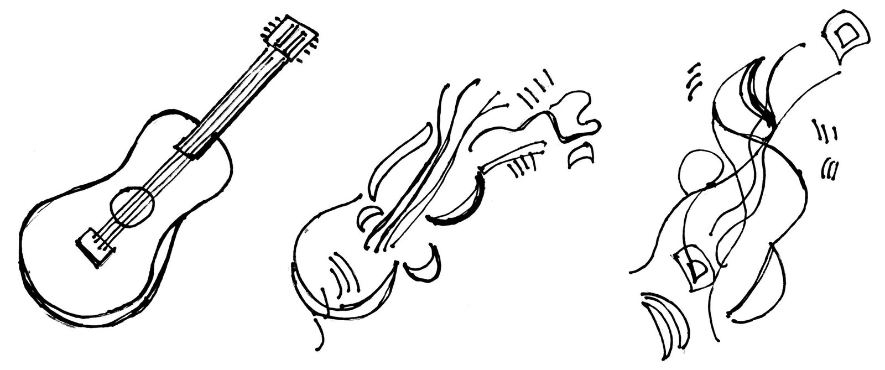
The image used in the workshop webpage to inspire the creation of abstract musical artefacts.
In the first slides of the shared Google document, we outlined a draft of the workshop structure. We arranged the schedule drawing on the design fiction workshops described by Andersen [10], where practical and fast-paced tasks are introduced to urge creative making and sidestep insecurity and overthinking - see slides 2 and 3. In the same introductory slides we also included a set of guidelines for the use of the online workspace. In particular, we were concerned that participants would modify or delete the work of others. We therefore suggested placing every new idea in a new slide, and to insert concept variations next to each other so as to generate “linear taxonomies” of absurdities.
In order to let participants familiarise with the workshop tools and modalities we shared the Google doc a few days before the event, including the two slides for the activity guidelines and structure. To facilitate and inspire participants, we also designed a slide template to be filled with contents and a few examples of absurd instruments – e.g. the Slow Growth Piano in Figure 2.

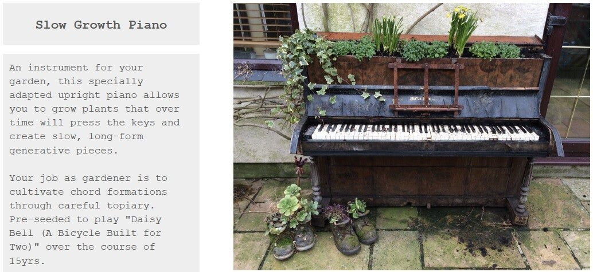
An example of absurd instruments presented by the organisers to inspire participants.
A Solid 3%
Attendees responded enthusiastically to the workshop call (i.e. fully booked event), suggesting a desire to contribute to and participate in the kind of exchanges elicited by our absurd activity. Overall, during the two hours participants fervently created over 300 questionable musical ideas and absurd instruments – as gladly noticed by one of the organisers: “a solid 3%”.
The design concepts uploaded touched upon a variety of techno-musical issues. In what follows we reflect on a curated selection of improbable musical ideas, and provide an overview of the diversity of outcomes produced during the activity.
Visionary and Critical NIME Statements
Many of the design concepts proposed by participants unlock clever techno-musical visions which we might experience in the next future. An example of such unrealistic yet captivating concept is the Personal Stylus: an embodied turntable stylus which translate surfaces into sound (see Figure 3).

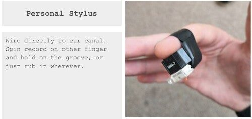
A bio-mechanical and embodied interface based on a turntable stylus.
Some of the instruments proposed during the workshop exploit irony to critique NIME research clichés and commonplaces. As an example, participants would often place an image of a piezo transducer connected to a knob on the top of any instrument ideas, so to create the “augmented” version of that given artefact – see some of the examples provided below.
The Laptop Ensemble shown in Figure 4 makes fun of the laptop orchestras we often found in music technology institutions through the idea of making music using only the default operating system sounds of our machines. Another critical approach found in our absurd catalogue looks at existing music technology devices considering the specific aesthetics they promote – e.g. Light Opera Tribe a sequencer specifically designed for the production of “crap” opera music (Figure 5).

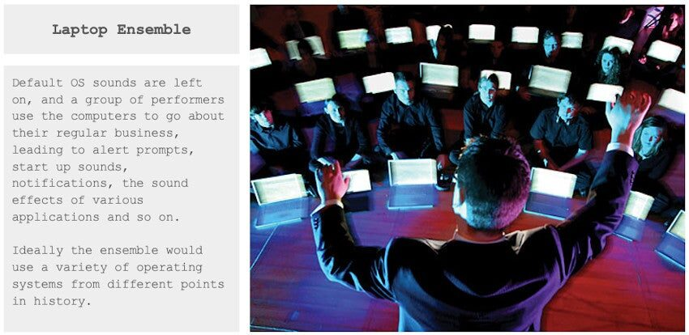
A laptop orchestra which performs notification sounds only.

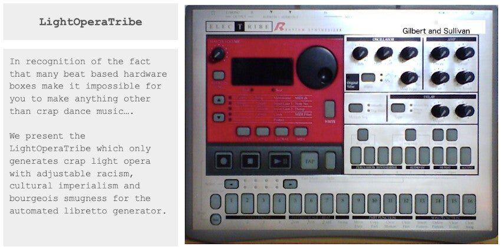
The LightOperaTribe hardware: a direct critique of the musical aesthetics inscribed in and mediated by many sequencer devices.
Other participants instead targeted nominal NIME research concepts to provoke playful reflections on the impact they had throughout the years. This is the case of the Crumple Brahms, a mockery of composed instrument concept [16] where “the composition is the instrument”; and the HyperMetaCyberInstrument: “the only instrument you will ever need”, which winks to John Bowers’ and his Infra-Instruments notion [17] – see Figure 6.

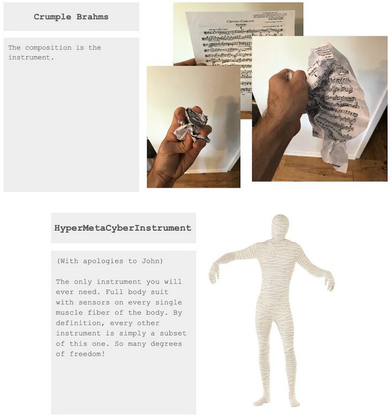
Examples of absurd musical designs making fun of well-known NIME research ideas.
Absurd Variations and Collages
Another ideation process we observed was the practice of generating variations of illogical and silly concepts around a theme. Indeed, since we anticipated its creative potential, while presenting the activity, we mentioned this strategy in the workshop guidelines. This technique of creative reiteration generated a wide spectrum of concepts that are sometime difficult to organise in homogeneous groups.
Examples of impractical interface ‘genealogies’ include instruments based on food and beverage, see Figure 7. In this particular area, frequent musical puns were alcohol based instruments such as the Tuned up Glass Harp (Figure 8), which has a resemblance to Perry Cook’s Fillup Glass [18], and the Breathalyser Saxophone which only plays sounds if alcohol is detected in the breath of the performer.

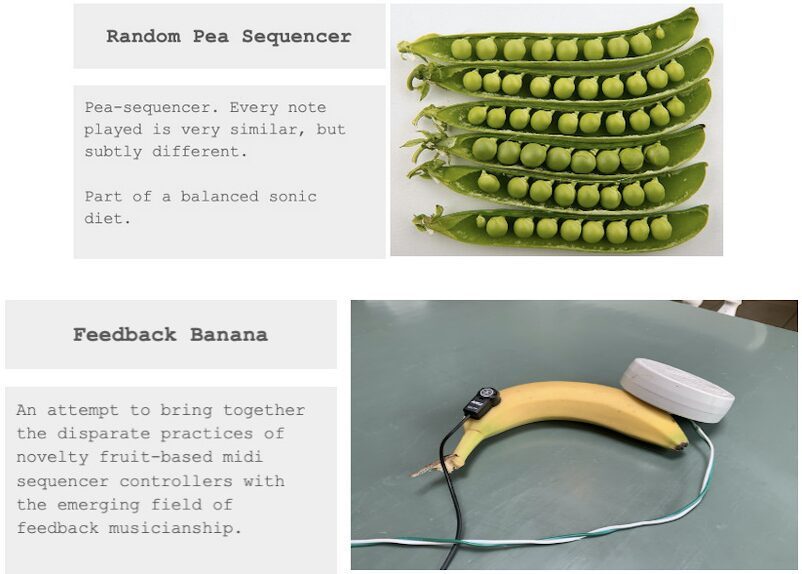
Examples of absurd musical designs based on fruit and vegetables.

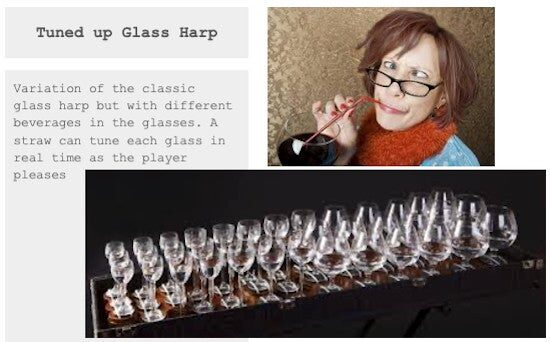
Tuned up Glass Harp.

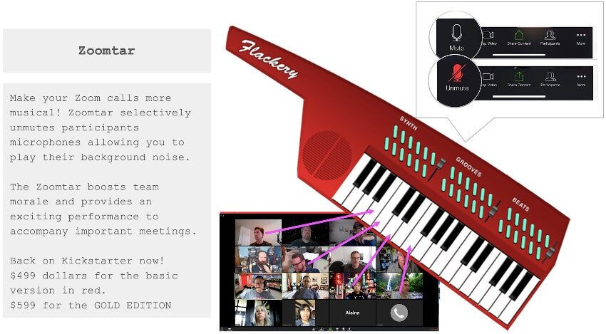
A music interface concept based on the Zoom platform.
Participants also proposed various musical designs inspired by the ways the pandemic modified human communication. These comprise the Corona Mask Breath Amp, which amplifies the “muffled murmurs present in current communication” by placing two Kazoos on a mask at the nostrils level. The Zoomtar instead makes Zoom calls more musical by providing “an exciting performance to accompany important meetings” (see Figure 9). Specifically conceived for our workshop, the 10,000 Instrument Squared is a device that “analyses zoom calls and uses advanced deep learning to synthesise the sounds that would be made by any absurd musical instruments mentioned”.
Out of the many taxonomies of absurd instruments proposed by participants we identified a particularly interesting sub-group of concepts characterised by minimal and open-ended design features. These abstract ideas – often presented only with a title and very little or no description – include the Bendable Continuous Instrument which, amongst others variations, evolved into the Polyphonic Bendable Discrete Instrument and the Not Bendable Discrete Instrument — see Figure 10.

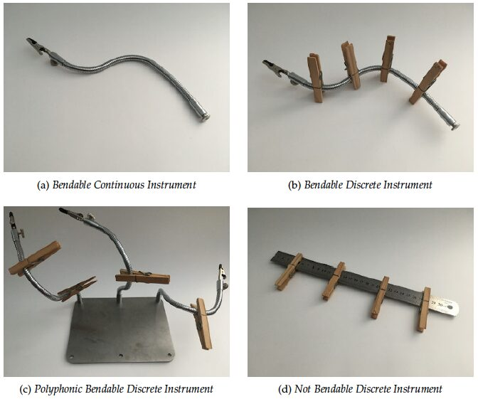
Some examples of minimal and undetermined design variations.
Another example of a rather cryptic musical artefact is the Black Box instrument, a concept which first appeared with the description “I am not sure what it does”. Such intriguing and open-ended artefacts stimulated the imagination of our participants. Iterations of the Black Box instrument include The Frankencode Black Box which “takes all your old crappy, poorly implemented code snippets, normalises inputs and outputs and turns it all into beautiful music” and The Ultimate NIME: a “permanently sealed” box that “contains the ultimate NIME - an interface perfectly balancing a moderate learning curve with quick pay-offs and superior user satisfaction”. Ultimately, The Ultimate NIME became the The Augmented Ultimate NIME, as augmentation was achieved by placing a piezo on the top of the box — Figure 11.

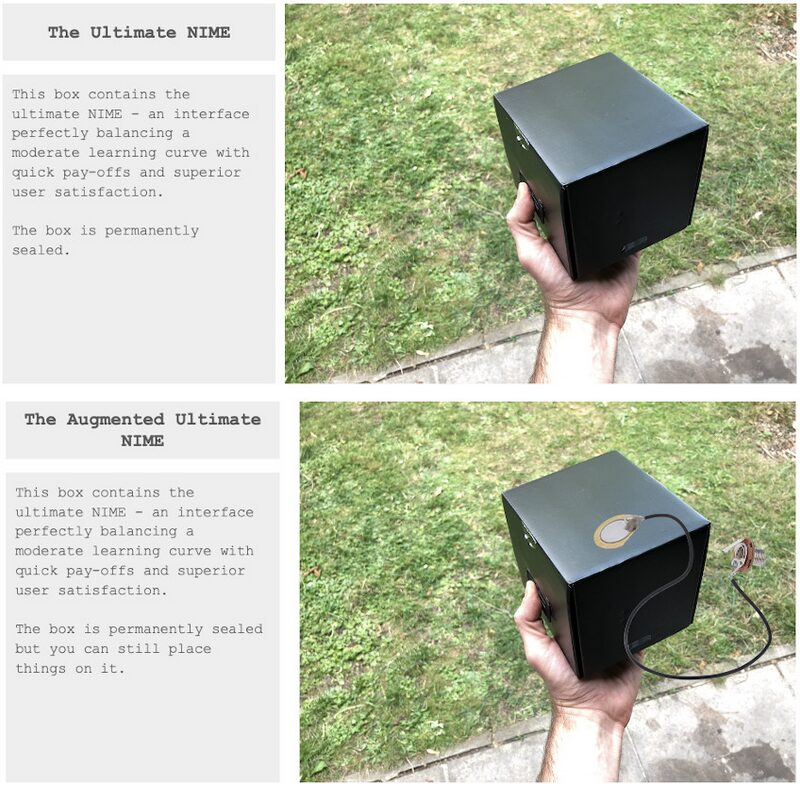
Some variations of the Black Box instrument.

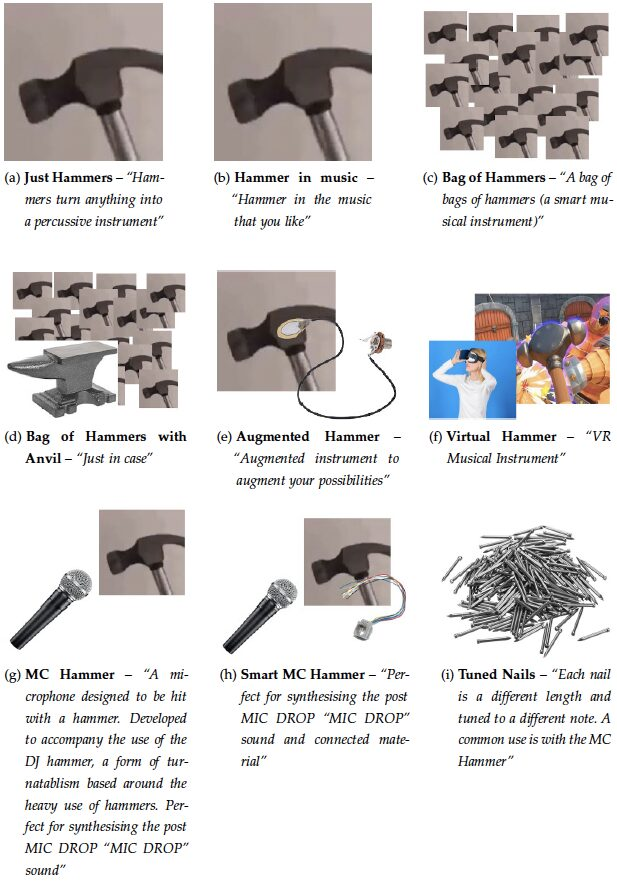
Nine variations on a silly musical instrument.
Overall, we could appreciate how the ‘variation mechanism’ often functioned as an incentive for the ideation of absurd interfaces. While creating new variations, participants were able to develop a broad range of statements around different music technology topics and artefacts by responding to the absurd ideas and comments presented by their fellows.
An example of such a reiterative device is shown in Figure 12 where it is possible to appreciate the complete set of alterations which began with the silly idea of the Hammer instrument. The Hammer alterations illustrate how participants used to grab and edit low quality images (e.g. from the internet) to retrieve multiple times the same questionable concept in rapid fashion. Alternatively to this approach, occasionally attendees introduced new absurd meanings by simply adapting the artefact description.

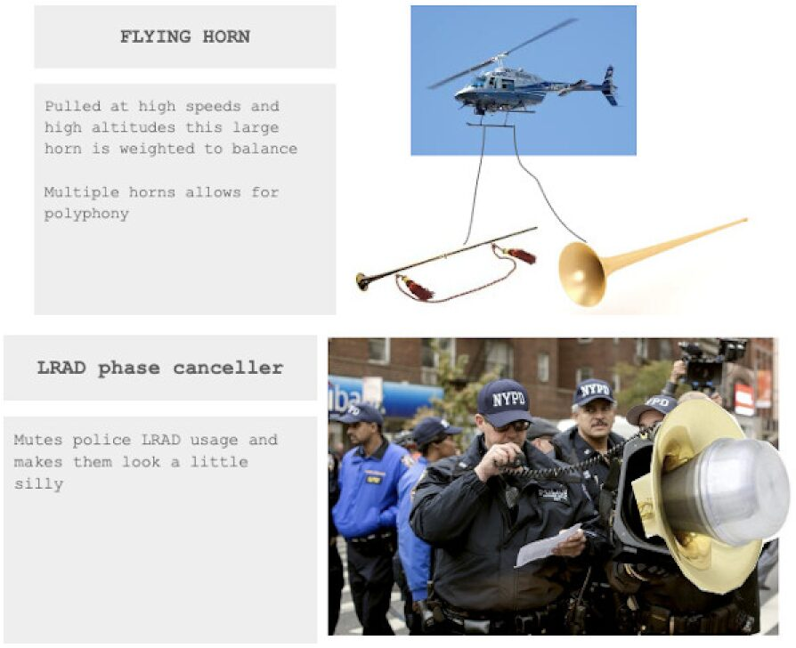
Examples of improbable collages featuring pre-existing images.
During the workshop participants often edited and rapidly combined different images to generate questionable and amusing musical instruments. Examples of such image compositions are the Flying Horn – an impractical technique to play horn instruments, and the the LRADs instruments which propose alternative designs of the LRAD weapon (Long Range Acoustic Device) – Figure 13. The collages created were made with images of everyday objects and tools, popular culture references as well as snapshots of music technology artefacts. These assemblages are often based on the loose combination of ‘found’ low quality pictures. Far from being refined design illustrations, these instruments therefore emphasise the value of the concept and ideation process over the hypothetical final product.
Participants also exploited the collage technique to iterate concepts previously introduced by other attendees. The handy and rapid process of reiterating found and decontextualised images then served as a compelling device to further develop others’ ideas. A device that gave attendees the opportunity to follow playful and silly intuitions, and possibly explore challenging and risky concepts through humour and absurdity.
Making the Familiar Strange
While reviewing the workshop outcomes, it appears evident that working remotely within the boundaries of our homes caused a shift towards the domestic, as we reflected upon the tools and materials around us for potential NIME making.
Many of the questionable instruments developed during the workshop are based on highly personal items which are part of the domestic and everyday experience. For instance, participants often proposed impractical concepts using household objects and tools like stationery, kitchen utensils and furniture. The Lockdown Organ is a brilliant example of such an approach, where toilet roll tubes are recycled to build an instrument for pandemic times. Similarly, artefacts like DIY data sock and Melodiyoga provide a good sense of the mundane and domestic qualities that characterise many of the workshop's absurd designs — see Figure 14.

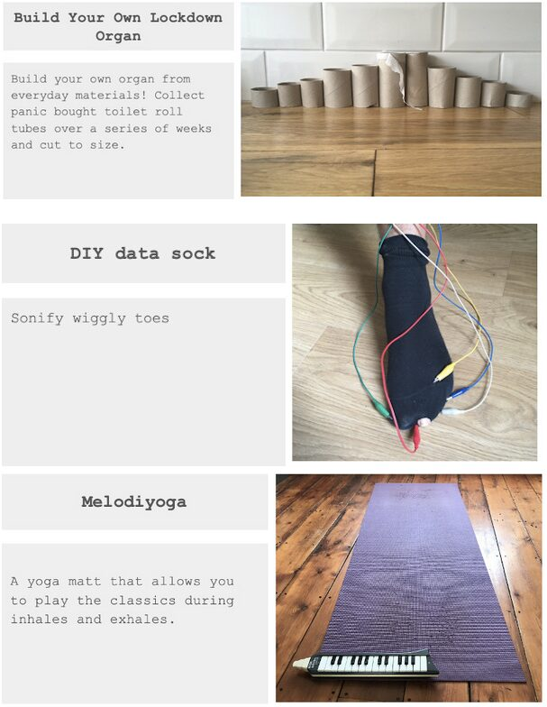
Examples of absurd concepts based on domestic and everyday objects.
These examples illustrate how, during the activity, familiar and everyday objects suddenly become exceptional and enigmatic. Making strange or defamiliarisation is a technique often exploited by artists to intensify and broaden the perception of common things: “[..] the process of perception is an aesthetic end in itself and must be prolonged” [19]. Defamiliarisation can be therefore understood as a device that forces us to (re)consider how we perceive the familiar and the tacit [20].
In the context of our workshop, the process of making something strange generally relies on the intimate relationships between people and their objects. These artefacts might sometimes result as rather cryptic and less available for reinterpretation. We suggest that our participants used the device of defamiliarisation in order to twist the obvious and provide contradictory viewpoints on both mundane objects and techno-musical assumptions. These musical artefacts can be considered as playful opportunities to generate subjective musical visions that allow participants (and ourselves) to explore inner, alternative and contradictory design spaces.
Resourcefulness was echoed throughout our proposed designs, as we found inspiration by scavenging, reimagining and augmenting the everyday. Although the workshop generated a wild number of fictional, absurd and somewhat impossible outcomes never to come into fruition, we can look to the potential benefits of exploring the domestic and the everyday in our design and making practices, adding to the discourse on some of the socio-political, socio-economic and environmental issues present within our community [21] [22].
Discussion
Let us bring out a number of points prompted by the 10,000 Instruments Workshop for further discussion. In this way, we hope to show how our experience connects to broader concerns in the NIME community and how its format and the values behind it can be taken forward into new research areas.
Open-Endedness and Resourcing Research
It is important to note that our workshop had no (or little) closure. We kept the workshop open-ended and, indeed, there was nothing to prevent any participant taking a copy of the Google document we made and freely developing it further themselves. This contrasts with many creativity methods which move at some stage to a second evaluation or selection phase, sometimes with some form of rating or voting activity, with a view to identifying a single or a small number of proposals to favour. This is the case, for example, in traditional brainstorming as first formulated by Osborn in 1953 [23]. There is a sense also in which, compared with classical brainstorming, our workshop was ‘open-beginninged’. We did not begin with a specific question against which proposals could be evaluated (also contra Osborn). Our logic is different.
Rather, we see the corpus of design ideas that the workshop generated as a potential ‘infrastructure’ in the sense of the A. Telier design collective [24]. It can be taken as a set of resources and exemplars which can be the basis for future work and thought. Some of the proposals, in spite of our best efforts, might actually be possible to make. Some might provoke further thinking about the kinds of materials that need to be developed to realise design fantasy. Some put into sharp relief whom we imagine our participants, musicians, users, or whatever we wish to call them, itself not an innocent matter, to be. Some might suggest aesthetic reflections on the kinds of music we want to make, how and why. In all these respects, the corpus of proposals serve as resources for addressing design concerns and as exemplars which can be drawn upon (or negated) as and when they seem appropriate.
As such, our workshop offers an image of a non-solutionist approach to design. Very often design work is conceived as a matter of solving problems. Indeed, research itself is often conceived this way or as answering questions. In the classical logic of brainstorming discussed earlier, an emphasis is placed on formulating a problem precisely and coherently and not attempting to address multiple issues at once. There are no problems being solved in our workshop, or at least, problem-solving, ‘heuristic’ activity, is not central. It is displaced. Rather, a design space is being created while it is being explored with the creation of the space and its exemplification being two sides of the one process.
Problem-oriented design and research often have with them a (sometimes unarticulated, taken for granted) space within which possible solutions can be articulated. The implicit existence of such spaces is a kind of ‘practical a priori’ for problematisation. Our work is not about formulating or solving problems in any traditional sense. It is rather about enriching the design spaces within which such affairs could be formulated and saturating those spaces with exemplars, a little concept-development, and much humour. If problems are encountered or raised for us, we are ready, but its is not necessary for our work that it offers solutions here and now.
Treasuring the Domestic
By reflecting upon the domestic themes emerging from many of the workshop’s fictional outcomes, such as those related to common materials, tools, objects or processes, we could also consider how DIY approaches and ‘everydayness’ could be explored as a route to creating a more diverse and `outward-looking’ community [2]. Reframing and recontextualising NIME projects through an alternative lens, such as with a DIY craft-led focus, creates a potential gateway into NIME and other music technology activities, where socio-political and socio-economic barriers prevent engagement and access to our often expensive and exclusive field.
DIY craft-focused entries, such as the fictional Lockdown Organ and DIY Data Sock could offer potential benefits in NIME pedagogy and accessibility, because of their low cost, non-specialist methods of production and use of familiar and domestic materials.
Placing DIY craft activity at the forefront of an instrument building project can be a useful tool in exploring ideas in NIME design/making with new audiences, by using the often more familiar aspects of DIY hobby craft as a vehicle to engage with ideas in interface design, DIY electronics, HCI, experimental music making, sonic arts and more. The use of everyday tools allows for such projects to be built at home or in grassroots, community-centred workshops, outside of academic or lab-based settings.
Exploring these relatable and familiar scenarios in novel creative technology-based projects can be a useful pedagogical tool in empowering and asserting confidence in new and non-specialist audiences, through playful yet meaningful experiences and opportunities, which could in turn lead to further engagement and be a positive step towards creating a more diverse future NIME community.
A Composite Annotated Portfolio
John Bowers and Bill Gaver and colleagues ([6] [7] and [25]) have discussed the concept of ‘annotated portfolio’ as a way of developing design work in HCI beyond a set of single examples. Our workshop format is meaningfully indebted with this approach: a form of reflective analysis that can be engaged in drawing out the similarities and differences between the designs in a portfolio to speak to HCI research issues via ‘annotations' [7].
In the context of our research, a complexly organised annotated portfolio emerged as a by-product of idea generation. Participants often drew out the similarities and differences between the proposals as they were making them. This is reflected in the rough organisation of the Google document, how related designs cluster together, how images are shared, how text is copied and pasted and altered, how local linear taxonomies emerge, and how participants sometimes literally annotated what is there. This occurs as a natural feature of generating ideas and situating them in relation to others in a shared document.
In our work, the document (portfolio), and the ways it has been organised and annotated, often have a taxonomic or indexing role in helping the reader work through the proposed instruments. They might also specify new research topics for future work. But they can also have a further creative role. For instance, annotations can serve as a way of structuring a concert or an exhibition, especially when performances or artworks have an ‘assemblage’ character, that is being made of multiple, materially different components - e.g. in educational settings when presenting to the public the projects developed by students during a music technology module.
Pedagogical Implications
A number of us have taken the workshop format into our own teaching activities. It is worth reflecting on this as a particular kind of pedagogical intervention. Very commonly, pedagogy is formulated as the imparting of knowledge or skill with the pedagogue someone who has that knowledge or skill and seeks to inculcate such in the students. Our pedagogical orientation is different. First, aside from formulating a topic, convening the workshop, and outlining ways of contributing to it, we become participants alongside everyone else. We all participate by generating and annotating ideas, piggy-backing on others, contributing to the emergence of themes, enjoying the humour and spontaneity.
At no stage in the workshop do we evaluate the outcomes or suggest upshots from the process as ‘lessons learned’. As such, our workshop has much in common with educational philosophies which emphasise the self-organisation of learning. For example, the philosopher Jacques Rancière [26] formulates the concept of The Ignorant Schoolmaster where ‘schoolmasters’ facilitate learning subjects that they have no knowledge of themselves. The key is to affirm the equal intelligence of all involved, build on the students’ existing knowledge and curiosity, and provide resources to enable them to find out for themselves.
While we, the authors, cannot boast ignorance of NIME, our approach has much in common. We do not see our participants as lacking any faculty or ability that we seek to remedy. And through the provision of certain minimal materials and the encouragement to use common resources (internet searches, the emerging body of proposals itself), our participants find things out for themselves, as, for that matter, do we.
While these types of ideation work have been explored before in music technology and HCI, such work is often based on word-based brainstorms and sorting exercises of post-it notes e.g. [27] (and online equivalents such as Miro). The novel contribution here lies in the use of a standard slide set as a site for collaboration, the possibilities in cut/paste as basis for fast iterations, and the live performative qualities of the workshop itself. As such the workshop format is uniquely suitable for online ideation, making use of existing tools and time-limited co-presence.
Workshop Improvisation
Much of the conduct of our workshop participants can be said to have improvisatory character. They were dealing with a thematic provocation in real-time, riffing on suggestions made by others, taking them forwards in ways which then suggested further variations from others. There have been various influences from improvisation practices in HCI [28] [29] - particularly, theatre improvisation informed aspects of the work based around characters and scenarios (e.g. [30]). It is striking how well some improvisation concepts fit how our participants conducted themselves in the workshop.
Keith Johnstone [31], for example, discusses a format for improvisation where the actors 1) ‘establish a platform’, 2) ‘tilt’ it, and 3) ‘reincorporate’ material that has already been introduced. Many of the interactions between our contributors had this character. A particular cluster of designs might be developed (e.g. variations on the banjo), tilted (made of greasy products), and other ideas reincorporated (with a piezo on top). As is commonly argued in writings on improvisation, participants should always aim for generativity - for making contributions that make it easier for others to make theirs - and not engage in ‘blocking’ (e.g. by flatly negating the platform that has been built up leaving one’s co-improvisor speechless). Our participants rarely blocked each other in this way and the remote conferencing character of the interaction helped if one was blocked for whatever reason. These affinities between improvisation and creative workshop formats, instructions, and methods of analysis and reflection are worth pursuing further.
In line with the spirit of the event, exchanges and variations usually occurred in a rather disorganised and discontinuous fashion. Participants started to reiterate absurd ideas since the third phase of the workshop, and continued, freely jumping from one absurd artefact to another, until the end of the event. On this note, we observed that only a few verbal exchanges occurred during the workshop (via Zoom video chat) and participants primarily focused on the ‘practical’ task of creating musical absurdities without coordinating with each other. Overall, we argue that these messy iterations and permissive transitions can be considered as an essential element of our activity, which enabled a good diversity of outcomes.
Conclusions
The 10,000 Instruments workshop may offer a vehicle to explore critical attitudes detached from overly theoretical discourses which can themselves be exclusionary. On the other hand, even the trend of poking fun at NIME clichés is well within established norms of the NIME community, and in some cases the humour of the workshop outcomes took the form of inside jokes. The fact that the workshop has been held within the NIME conference might have conditioned the work of our participants. Similarly, our selection of artefacts purposely focuses on some of the stereotypes and assumptions linked to NIME practices.
Still, by quickly reviewing the more-than-300 ideas collected, it is possible to get a sense of the activity’s variety of outcomes. We then argue that, due to the generative potential of our approach, the same workshop method, repeated in other contexts and communities of musical practice, would produce completely different results. It might also reveal assumptions and trends characterising particular socio-musical settings.
We would like to close this paper by making contact with the conference theme of Decolonising Musical Interfaces. We intend to do this with some care and in a spirit of allyship. Decolonisation was not the direct topic of our workshop, nor did it become an explicit theme in what participants proposed. It must also be admitted that, as authors, we are well embedded, even if uneasily so, within disciplines and institutions with colonial pasts and presents. Yet, there are many affinities between the commitments in our work and important discussions of decoloniality.
For example, in her early work on decolonialidad, Maria Lugones [32] [33] argues that playfulness is essential to ‘world-travelling’, as non-hierarchical connections are made which recognise ‘interlocked multiplicities’ and new decolonial identities are formed. For Lugones, playfulness, trickery and foolery enable different worlds to be brought into relation, creating ambiguities which are not just funny but ‘survival-rich’. Importantly, and contrary to theorisations which take competitive, rule-governed games as the paradigmatic occasion for play (e.g. [34]): “Playfulness is, in part, an openness to being a fool, which is a combination of not worrying about competence, not being self-important, not taking norms as sacred and finding ambiguity and double edges a source of wisdom and delight” [32], p. 17.
Lugones commends that we engage in ‘festive resistance’ which, amongst other activities, consists in “blurring categories... reinvention of our names for things and people... marking cultural mixtures... revealing the chaotic in production... announcing the impurity of the pure by ridiculing his inability at self-maintenance” [33], p. 478.
We hope our workshop honoured this spirit of festive resistance as we travel to and from the world of NIME.
Ethics Statement
We informed participants about our intention to make public the workshop outcomes (i.e. the shared online document) as a roughly organised collection of instrument ideas and conversations emerged during the event. We also made clear that the sketches and annotations created during the workshop will be under a Creative Commons License (CC BY-NC-ND) — see introductory slide number 3.
In this paper we present and comment on a selection of instrument ideas, treating them as available resources which might stimulate future debates around unconventional instrument design methods and expand the variety of outcomes linked to NIME research. We cover these key ethical issues towards the end of our paper.
Due to the nature of the online format adopted, when the number of participants is high, it is difficult to spot potential frictions between participants (e.g. unintentional modification of other people's material). In the context of NIME all attendees signed in voluntarily and we had the general impression of people partaking with enthusiasm and purpose. However, in a different context, participants might not be willing to engage and share as much as our participants did. From this viewpoint the workshop format has limitations, as it makes it difficult to pay particular attention to specific sub-groups or individuals.
To facilitate the process of sharing ideas and mitigating possible frictions, we also encouraged participants to consider whether the uploaded contents might be inappropriate for other attendees, and we suggested a set of key words to provide some more specific cues on the kind of permissive and open-ended approach we envisioned for the workshop (see slide 3).
In terms of access, diversity and code of conduct, our workshop conformed with the statements and guidelines provided by the NIME 2020 organising committee. In line with the accessibility measures adopted throughout the conference, live captioning was available for those participants that requested it. We also planned various rest breaks to ease the workshop’s attendance and limit screen fatigue.
Finally, we believe that our activity does not present particular challenge in terms of resources and costs and we declare that we have no conflicts of interest in carrying out this work or in this paper, financially or otherwise.
Footnotes
Retrieved from the workshop call
↩- ↩
The Google Slides used to collect the instrument ideas created during the workshop – last access January 31, 2022
↩
Citations
- ↩Xambó, A. (2018). Who Are the Women Authors in NIME? - Improving Gender Balance in NIME Research. Proceedings of the International Conference on New Interfaces for Musical Expression, 174–177. http://www.nime.org/proceedings/2018/nime2018_paper0037.pdf
- ↩Morreale, F., Bin, S. M. A., McPherson, A., Stapleton, P., & Wanderley, M. (2020). A NIME Of The Times: Developing an Outward-Looking Political Agenda For This Community. Proceedings of the International Conference on New Interfaces for Musical Expression, 160–165. https://www.nime.org/proceedings/2020/nime2020_paper31.pdf
- ↩Frid, E. (2019). Accessible Digital Musical Instruments—A Review of Musical Interfaces in Inclusive Music Practice. Multimodal Technologies and Interaction, 3(3), 57.
- ↩Gurevich, M. (2016). Diversity in NIME Research Practices. Leonardo, 49(1), 80–81.
- ↩Devendorf, L., Andersen, K., Rosner, D. K., Wakkary, R., & Pierce, J. (2019). From HCI to HCI-Amusement: Strategies for Engaging what New Technology Makes Old. Proceedings of the CHI Conference on Human Factors in Computing Systems, 35.
- ↩Gaver, W. (2012). What Should We Expect from Research through Design? Proceedings of the CHI Conference on Human Factors in Computing Systems, 937–946.
- ↩Bowers, J. (2012). The Logic of Annotated Portfolios: Communicating the Value of Research through Design’. Proceedings of the Designing Interactive Systems Conference, 68–77.
- ↩Bowers, J., & Green, O. (2018). All the Noises: Hijacking Listening Machines for Performative Research. Proceedings of the International Conference on New Interfaces for Musical Expression, 114–119. http://www.nime.org/proceedings/2018/nime2018_paper0026.pdf
- ↩Lepri, G., McPherson, A., & Bowers, J. (2020). Useless, not Worthless: Absurd Making as Critical Practice. Proceedings of the Designing Interactive Systems Conference.
- ↩Andersen, K., & Wakkary, R. (2019). The Magic Machine Workshops: Making Personal Design Knowledge. Proceedings of the 2019 CHI Conference on Human Factors in Computing Systems, 1–13.
- ↩Andersen, K., & Wakkary, R. (2019). The Magic Machine Workshops: Making Personal Design Knowledge. Proceedings of the 2019 CHI Conference on Human Factors in Computing Systems, 1–13.
- ↩Vines, J., Blythe, M., Lindsay, S., Dunphy, P., Monk, A., & Olivier, P. (2012). Questionable Concepts: Critique as Resource for Designing with Eighty Somethings. Proceedings of the CHI Conference on Human Factors in Computing Systems, 1169–1178.
- ↩Devendorf, L., Andersen, K., Rosner, D. K., Wakkary, R., & Pierce, J. (2019). From HCI to HCI-Amusement: Strategies for Engaging what New Technology Makes Old. Proceedings of the CHI Conference on Human Factors in Computing Systems, 1–12.
- ↩Blythe, M., Andersen, K., Clarke, R., & Wright, P. (2016). Anti-Solutionist Strategies: Seriously Silly Design Fiction. Proceedings of the CHI Conference on Human Factors in Computing Systems, 4968–4978.
- ↩Kawakami, K. (1997). 99 More Unuseless Japanese Inventions: the Japanese Art of Chindogu. Harper Collins, London.
- ↩Rosner, D. K. (2018). Critical Fabulations: Reworking the Methods and Margins of Design. MIT Press.
- ↩Blythe, M., Andersen, K., Clarke, R., & Wright, P. (2016). Anti-Solutionist Strategies: Seriously Silly Design Fiction. Proceedings of the CHI Conference on Human Factors in Computing Systems, 4968–4978.
- ↩Andersen, K., & Wakkary, R. (2019). The Magic Machine Workshops: Making Personal Design Knowledge. Proceedings of the 2019 CHI Conference on Human Factors in Computing Systems, 1–13.
- ↩Lepri, G., McPherson, A., & Bowers, J. (2020). Useless, not Worthless: Absurd Making as Critical Practice. Proceedings of the Designing Interactive Systems Conference.
- ↩Andersen, K., & Wakkary, R. (2019). The Magic Machine Workshops: Making Personal Design Knowledge. Proceedings of the 2019 CHI Conference on Human Factors in Computing Systems, 1–13.
- ↩Schnell, N., & Battier, M. (2002). Introducing Composed Instruments, Technical and Musicological Implications. Proceedings of the International Conference on New Interfaces for Musical Expression, 156–160. http://www.nime.org/proceedings/2002/nime2002_156.pdf
- ↩Bowers, J., & Archer, P. (2005). Not Hyper, Not Meta, Not Cyber but Infra-Instruments. Proceedings of the International Conference on New Interfaces for Musical Expression, 5–10. http://www.nime.org/proceedings/2005/nime2005_005.pdf
- ↩Cook, P. R. (2001). Principles for Designing Computer Music Controllers. Proceedings of the International Conference on New Interfaces for Musical Expression. http://www.nime.org/proceedings/2001/nime2001_003.pdf
- ↩Shklovsky, V. (1917). Art as Technique. Contemporary Literary Criticism. Modernism Through Poststructuralism.
- ↩Bell, G., Blythe, M., & Sengers, P. (2005). Making by Making Strange: Defamiliarization and the Design of Domestic Technologies. Transactions on Computer-Human Interaction, 12(2), 149–173.
- ↩Masu, R., Melbye, A. P., Sullivan, J., & Jensenius, A. R. (2021). NIME and the Environment: Toward a More Sustainable NIME Practice. Proceedings of the International Conference on New Interfaces for Musical Expression. https://nime.pubpub.org/pub/4bbl5lod
- ↩Hayes, L., & Marquez-Borbon, A. (2020). Nuanced and Interrelated Mediations and Exigencies (NIME): Addressing the Prevailing Political and Epistemological Crises. Proceedings of the International Conference on New Interfaces for Musical Expression, 428–433. https://www.nime.org/proceedings/2020/nime2020_paper83.pdf
- ↩Osborn, A. F. (1953). Applied Imagination: Principles and Procedures of Creative Problem Solving. Charles Scribner’s Sons.
- ↩Binder, T., De Michelis, G., Ehn, P., Jacucci, G., & Linde, P. (2011). Design things. MIT press.
- ↩Morreale, F., Bin, S. M. A., McPherson, A., Stapleton, P., & Wanderley, M. (2020). A NIME Of The Times: Developing an Outward-Looking Political Agenda For This Community. Proceedings of the International Conference on New Interfaces for Musical Expression, 160–165. https://www.nime.org/proceedings/2020/nime2020_paper31.pdf
- ↩Gaver, W. (2012). What Should We Expect from Research through Design? Proceedings of the CHI Conference on Human Factors in Computing Systems, 937–946.
- ↩Bowers, J. (2012). The Logic of Annotated Portfolios: Communicating the Value of Research through Design’. Proceedings of the Designing Interactive Systems Conference, 68–77.
- ↩Culén, A. L., Børsting, J., & Gaver, W. (2020). Strategies for Annotating Portfolios: Mapping Designs for New Domains. In Proceedings of the 2020 ACM Designing Interactive Systems Conference (pp. 1633–1645).
- ↩Bowers, J. (2012). The Logic of Annotated Portfolios: Communicating the Value of Research through Design’. Proceedings of the Designing Interactive Systems Conference, 68–77.
- ↩Rancière, J. (1991). The ignorant schoolmaster (Vol. 1). Stanford University Press Stanford, CA.
- ↩Correia, N. N., & Tanaka, A. (2014). User-centered design of a tool for interactive computer-generated audiovisuals. Proceedings of the International Conference on Live Coding.
- ↩Andersen, K., Devendorf, L., Pierce, J., Wakkary, R., & Rosner, D. K. (2018). Disruptive Improvisations: Making Use of Non-Deterministic Art Practices in HCI. Extended Abstracts of the Conference on Human Factors in Computing Systems, W11.
- ↩Kang, L. (Leo), Jackson, S. J., & Sengers, P. (2018). Intermodulation: Improvisation and Collaborative Art Practice for HCI. In Proceedings of the 2018 CHI Conference on Human Factors in Computing Systems (pp. 1–13). https://doi.org/10.1145/3173574.3173734
- ↩Djajadiningrat, J. P., Gaver, W. W., & Fres, J. W. (2000). Interaction Relabelling and Extreme Characters: Methods for Exploring Aesthetic Interactions. Proceedings of the 3rd Conference on Designing Interactive Systems, 66–71.
- ↩Johnstone, K., & Wardle, I. (2012). Impro: Improvisation and the theatre. Routledge.
- ↩Lugones, M. (1987). Playfulness,“world”-travelling, and loving perception. Hypatia, 2(2), 3–19.
- ↩Lugones, M. (1994). Purity, impurity, and separation. Signs: Journal of Women in Culture and Society, 19(2), 458–479.
- ↩Huizinga, J. (1949). Homo Ludens: A Study of the Play-element in Culture. Routledge & Kegan Paul.
- ↩Lugones, M. (1987). Playfulness,“world”-travelling, and loving perception. Hypatia, 2(2), 3–19.
- ↩Lugones, M. (1994). Purity, impurity, and separation. Signs: Journal of Women in Culture and Society, 19(2), 458–479.